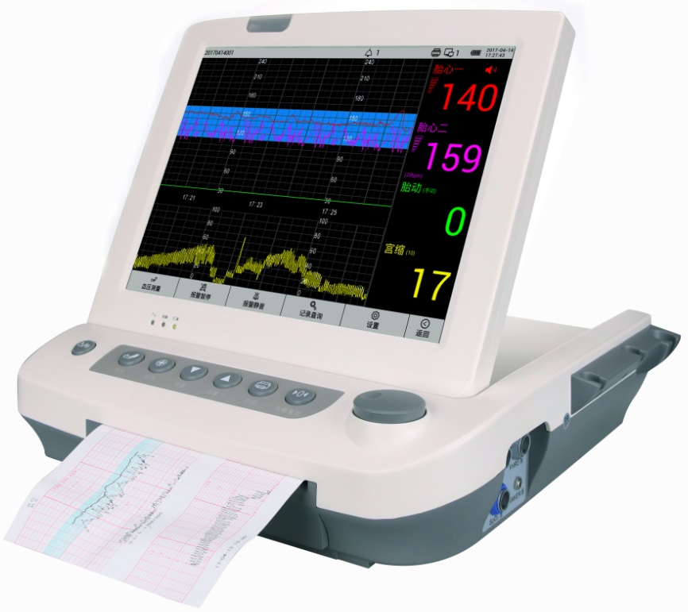

Ing. Jorge Martínez
Equipos médicos y de lavandería industrial a menor precio y con garantía!
Tag
Quienes Somos
Productos
Servicios
Ventajas
Contacto
Monitor Fetal
Home
Atrás
Monitor Maternal/Fetal
AFM-800P

Monitor Maternal/Fetal
AFM-800
Doppler Fetal
AFD-640C
Doppler Fetal
AFD-6SE
X
Monitor Maternal/Fetal AFM-800P
Pantalla a color TFT de 12.1 pulgadas Plegable hasta 90 grados
Puede satisfacer la necesidad de etapas completas del trabajo de parto (incluida la monitorización preparto e intraparto para el feto y la madre)
También se puede conectar a la estación obstétrica central
Interfaz de parámetros de FCF, TOCO y movimiento fetal con pantalla
Batería de iones de litio, 2200 mAh / 14.8 V Máximo 4 horas de monitoreo continuo
Sistema de alarmas
Tecnología DSP, identificación y medición en tiempo real para FCF, resultados precisos y confiables
Transductor especial de alta sensibilidad
42 horas de almacenamiento de datos que se pueden reproducir e imprimir
Ultrasonido de baja potencia, seguro para el feto
Amplio rango de aplicación de voltaje (100-240V)
Prueba automática de FM
Accesorios estandar: Transductor 3 en 1 (FHR.TOCO, FM), 2 piezas de papel de impresora, un cable de alimentación
X
Monitor Maternal/Fetal AFM-800
Pantalla a color TFT de 7 ", plegable 90 grados
Resolución: 800 * 480
Interfaz y pantalla digital de FHR, TOCO, FM
Registrador térmico incorporado, 110 * 100 mm
Velocidad de impresión: 1, 2, 3 cm / min
La configuración del sistema se puede hacer muy fácil y se puede almacenar automáticamente
La impresora térmica de línea interna puede grabar FHR, TOCO, la vida útil supera los 20 años
Un marcador estándar de eventos del paciente y un botón de marcado de eventos clínicos para marcar por separado los eventos clínicos
Movimientos fetales automáticos están disponibles
Cristales múltiples, forma de haz ancho, transductor de ultrasonido de alta sensibilidad, bajo poder de ultrasonido, más seguro para el feto
Funcionamiento con AC o con batería de Litio
Más de 42 horas de almacenamiento de datos, luego se puede reproducir y volver a imprimir
Interfaz incorporada a la estación central de enfermería
Accesorios estandar: Transductor 3 en 1 (FHR.TOCO, FM), 2 piezas de papel de impresora, un cable de alimentación
X
Doppler Fetal AFD-640C
Auricular y altavoz pueden incorporarse
Sonda Doppler de alta sensibilidad
Baja dosis de ultrasonido
Pantalla con LCD a color
Frecuencia de ultrasonido: 2MHz
Intensidad de ultrasonido: <10mW / cm2
Fuente de alimentación: AC 220 / 110V, 50 / 60Hz; DC 2 piezas de batería recargable Ni-MH
Pantalla: LCD de 45 * 25 mm
Rango de medición de FHR: 50-240bpm
Resolución de FCF: 1bpm
Precisión de FCF: ± 1bpm
Consumo de energía: <1W
Dimensiones: 135 mm * 95 mm * 35 mm, peso: 500 g
Accesorios estandar: Sonda de ultrasonido 1pc, batería 1pc, adaptador 1pc
Opcionales: Auriculares, bolsa de transporte, gel
X
Doppler Fetal AFD-6SE
Sonda INALÁMBRICA de alta sensibilidad
Gran pantalla a color TFT
Bajo poder de ultrasonido, seguro para el feto
Batería recargable para un largo tiempo de trabajo
El mismo algoritmo avanzado de FCF con ese uso en monitor fetal
Dos altavoces para una buena calidad de sonido
Frecuencia de trabajo: 2.0MHz
Modo de trabajo: doppler pulsado
Fuerza de ultrasonido: <5mW / cm2
Rango de medición: 50-210bpm o 30-240bpm
Precisión: ± 1% o ± 1bpm (que es mayor)
Potencia del altavoz: 1 W
Dimensión de la pantalla: 230D * 177W * 125H (mm)
Peso: 1,5 kg (incluida la batería)